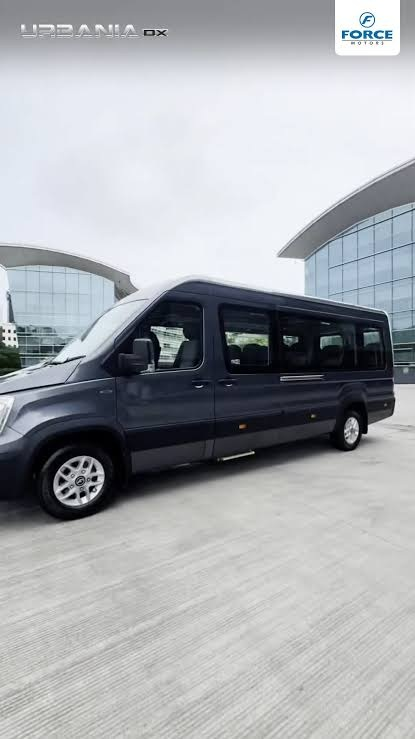
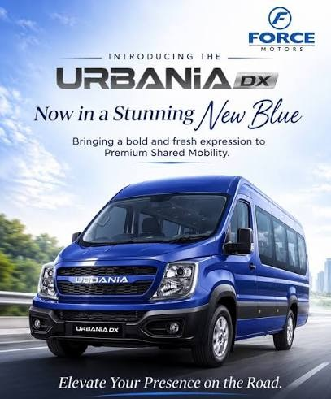
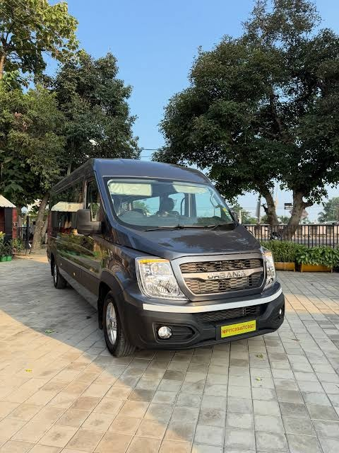
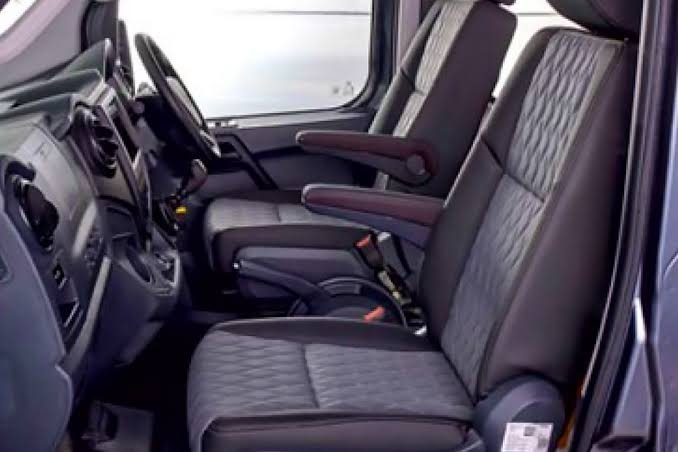

About us / Our fleet
A Noida-based travel desk with its own luxury coach.
We started Candy Travels India so families and friend groups from Greater Noida West could leave together, stay together, and return without the usual shared-bus compromises.
Our story
From our office at Grandthum, Techzone 4, we plan short pilgrimages, heritage visits and longer hill drives. Our signature service is built around a Force Urbania 16-seater that we own and maintain, with the clean cabin, dependable air-conditioning and group comfort our travellers expect.
For a Mathura–Vrindavan darshan, an Agra heritage day or a Lansdowne weekend, we shape a private itinerary around your family or group rather than a packed tourist circuit.
Our routes include Braj’s sacred towns, Khatu Shyam, Golu Devta Temple, Kainchi Dham, Haridwar and Rishikesh, as well as popular hill and tourist destinations such as Lansdowne, Mussoorie, Nainital, Shimla, Manali, and the Agra–Bharatpur heritage and nature route. For smaller parties and intercity or outstation journeys, our booking partners can arrange a 7-seater Innova Crysta or Ertiga, along with Swift Dzire and Hyundai Aura sedans. The Urbania remains our main group-travel experience.


Force Urbania
Sixteen seats, captain comfort.
The Urbania is a high-roof luxury people-mover. It is the right size for a joint family, a school-of-friends trip, or a small office offsite — large enough to stretch, small enough that nobody feels lost at the back.
- Reclining captain seats with generous legroom
- Powerful climate control for plains heat and hill evenings
- High windows and a raised ride for scenic stretches
- USB charging and space for cabin bags
- Rear luggage area for overnight hill trips
- Smooth highway manners on Yamuna Expressway and NH routes
Our vehicle
A closer look at the Force Urbania.
See the exterior, passenger space and interior details of our own 16-seater Urbania.



Who it is perfect for
Families with elders and children, wedding guest transfers, college groups, and outstation weekends. You book the vehicle privately, so the playlist, the snack stops and the timetable stay yours.
Booking benefit: one point of contact, transparent kilometre planning, and WhatsApp updates from pickup to drop.